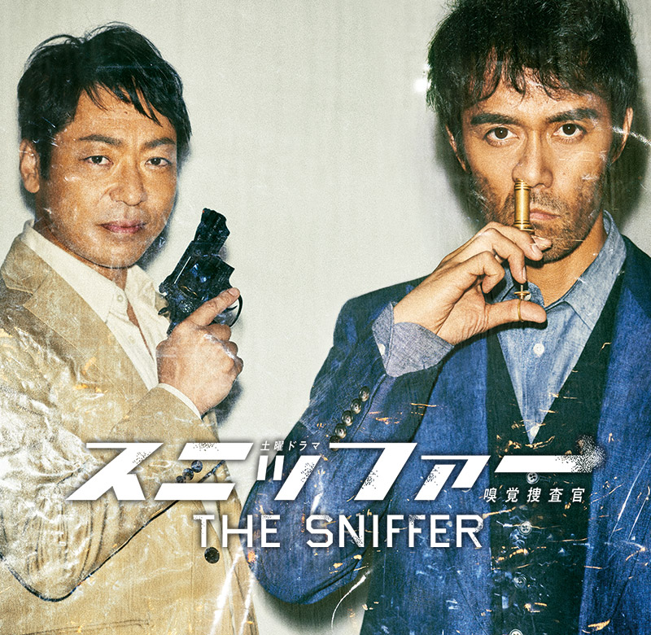
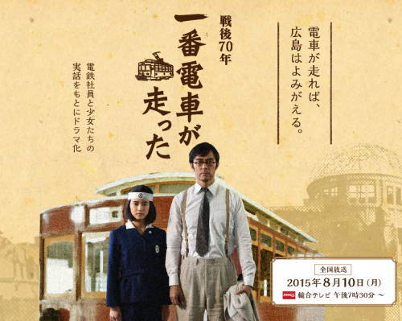

APPEARANCE
ドラマ出演
-
ドラゴン桜
放送予定：2020年夏
※コロナウイルスの感染拡大の影響につき放送を延期しております。
入試制度改革が行われる2021年こそ東大合格の大チャンス！？
時代は平成から令和へ辛辣だが誰よりも生徒を想う弁護士が令和ならではの勉強法で、新世代の生徒たちを東大合格へ導く！
今作も受験生のみならず、大人も必見！
子育てや部下の教育にも通じる“桜木メソッド”が満載！！ -
まだ結婚できない男
放送期間：2019年10月8日〜12月10日
桑野信介(阿部寛)は腕のいい建築士。ルックスも収入も人並み以上だが、「メリットがない」という考えから、50歳を過ぎた今も結婚の経験はない。
さらに、偏屈で皮肉屋の桑野は、プライドの高さとこだわりの強さから恋人を作ることもなく、気楽なシングルライフを送っていた。
そんな桑野がひょんなことから、近所で事務所を構える弁護士の吉山まどか、まどかの依頼人でカフェ店長の岡野有希江、隣室に引っ越してきた謎の若い女性・戸波早紀と出会う。 -
下町ロケット
放送期間：2018年10月14日〜12月23日
精密機械製造業の中小企業・佃製作所の社長・佃航平は、主要取引先の京浜マシナリーから、突然、取引終了の通知を受ける。
資金繰りに困りメインバンクの白水銀行に3億円の融資を申し込むが渋られる。
追い打ちをかけるように、今度はライバル会社のナカシマ工業から特許侵害で訴えられて、白水銀行からは融資を断られてしまう... -
遥かなる山の呼び声
放送日：2018年11月24日
2018年春の北海道・中標津。夫を亡くした風見民子(常盤貴子)は、亡夫がこだわり続けた完全放牧酪農を周囲の反対にも負けずに続けている。
昨年、風見家は大幅な赤字へ転落。今年は黒字が必達の課題となっている。しかし、民子をとりまく環境は崖っぷち状態である。義父は持病が悪化し、主な労働役務は民子ひとりの肩にずっしりと重くのしかかっているのが実態だ。
そんな折、嵐の夜にバイクが故障して動かなくなり、風見牧場へ一晩の宿を求めに来た男(阿部寛)が民子の前に突然現れた。ぶっきら棒に男は言った・・「ここで働かせてください！」 -
 スニッファー 嗅覚捜査官
放送期間：2016年10月22日〜12月3日
特殊な重要犯罪にだけ、事件解決のコンサルタントとして呼ばれる男がいる。その名は華岡信一郎。別名“スニッファー（匂いを嗅ぐ人）”。
人並み外れた鋭敏な嗅覚を持つ彼が、ひと嗅ぎすれば犯罪はもちろんのこと、全てのナゾを暴いてしまう…。 -
 一番電車が走った
放送日：2015年8月10日
昭和20年8月6日午前8時15分、アメリカ軍が広島市に投下した人類史上初の原子爆弾。これにより広島市の9万から16万6千人の人々が数カ月のうちに死亡した。
戦火となった広島では、原爆投下からわずか3日後の9日から一部の路面電車が復旧した。生き残った広島電鉄の社員たちと、運転士を務めていた女学生たちが広島の希望のために奮闘した。
すべてを失った広島が「電車が動いたら広島は復活するんじゃ！」と希望を込めてその路面電車を「一番電車」と呼んだ…。 -
眠りの森
放送日：2014年1月2日
捜査一課の刑事･加賀恭一郎は､夜勤明けに興味のないバレエを観にいくことに｡
ところが､浅岡美緒が演じる黒鳥に目を奪われ､その才能にすっかり魅了されてしまう｡
その公演を主催する名門･高柳バレエ団の事務所で､ある男が殺された｡ -
ゴーイングマイホーム
放送期間：2012年10月9日〜12月18日
主人公・坪井良多は家でも会社でも板挟みの、どこか居場所のないサラリーマン。
けれどある日、疎遠になっていた父が倒れたことをきっかけに、彼の”それなりに幸せ”だった人生に異変が起きる。
市井（しせい）の人々のおかしみ、ぬくもり、心の痛みを爽快でありながら奥深い味わいで描いてきた是枝裕和監督が贈る、極上のホームドラマ。 -
赤い指～『新参者』加賀恭一郎再び!
放送日：2011年1月3日
刑事・加賀恭一郎（阿部寛）が“新参者”として人形町に赴任する、約2年前のこと。
入院中である加賀恭一郎の父・隆正（山崎努）の病室に、松宮脩平（溝端淳平）が見舞いに訪れる。
闘病生活を送る隆正の楽しみは、看護師・金森登紀子（田中麗奈）との将棋。
登紀子から恭一郎が見舞いに来ていないことを聞いた松宮は、恭一郎への不信感を募らせる。 -
新参者
放送期間：2010年4月18日〜6月20日
日本橋小伝馬町で一人暮らしの40代の女性が絞殺された。
日本橋署に着任したばかりの加賀恭一郎は、自身にとって未知の土地の日本橋を歩き、事件や被害者と何らかの接点を持った家族や店を訪れる。
加賀は事件に残されたいくつかの謎の解明のため、その謎に関わった当事者達の様々な想いを一つずつ解きほぐしていき、そしてそれらの解決を通じ絞殺事件そのものの真相にたどり着いていく。